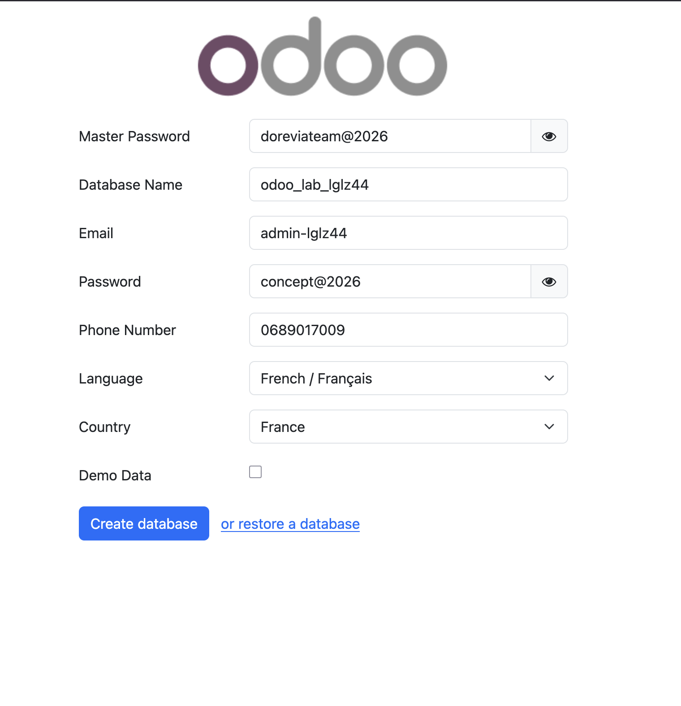

Date : 2026-02-12
Tenant : lglz44
URL : https://odoo.lab.lglz44.doreviateam.com
Référence : PLAN_INSTANCE_ODOO_18_LGLZ44_2026-02-12.md
Mise en place d'une nouvelle instance Odoo 18 pour le tenant lglz44, sans branchement Dorevia Vault (prévu ultérieurement).
| Fichier | Description |
|---|---|
tenants/lglz44/state/manifest.json | Manifest tenant (universes: odoo, environments: lab, units.platform: []) |
tenants/lglz44/apps/odoo/lab/odoo.conf | Configuration Odoo (db, addons, proxy_mode, sans queue_job) |
tenants/lglz44/apps/odoo/lab/docker-compose.yml | Compose Odoo + PostgreSQL (copié depuis rendered) |
tenants/lglz44/rendered/lab/odoo/docker-compose.ymltenants/lglz44/rendered/lab/caddy/Caddyfile| Composant | Statut |
|---|---|
| PostgreSQL | odoo_db_lab_lglz44 — démarré |
| Odoo 18 | odoo_lab_lglz44 — démarré |
| Volumes | odoo_lab_lglz44_db, odoo_lab_lglz44_data — créés |
| Réseau | Attaché à dorevia-network |
odoo.lab.lglz44.doreviateam.com → odoo_lab_lglz44:8069L'étape apply du script dorevia.sh n'a pas été utilisée car le tenant a units.platform: [] et le script attend un fichier rendered/platform/docker-compose.yml. Le déploiement a été effectué manuellement :
apps/odoo/lab/docker compose -p dorevia_odoo_lab_lglz44 up -ddorevia.sh gateway aggregatedocker compose -f units/gateway/docker-compose.yml exec caddy caddy reload --config /etc/caddy/Caddyfileoca_extra_addons : Avertissement Docker (volume partagé avec dorevia_odoo_lab_core). Comportement normal pour les addons OCA.curl -I https://odoo.lab.lglz44.doreviateam.com
Premier accès à https://odoo.lab.lglz44.doreviateam.com : écran de création de base (database name odoo_lab_lglz44).

| Vérification | Commande |
|---|---|
| Conteneurs up | docker ps | grep odoo_lab_lglz44 |
| Réseau | docker inspect odoo_lab_lglz44 | grep dorevia-network |
| HTTPS | curl -I https://odoo.lab.lglz44.doreviateam.com |